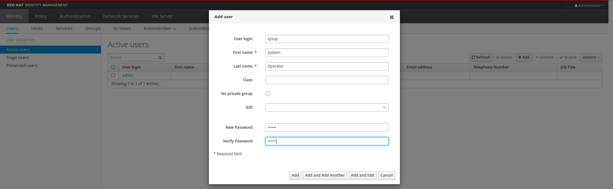
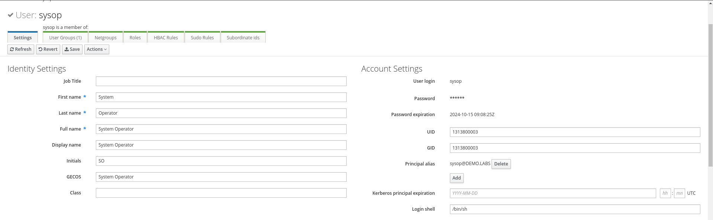
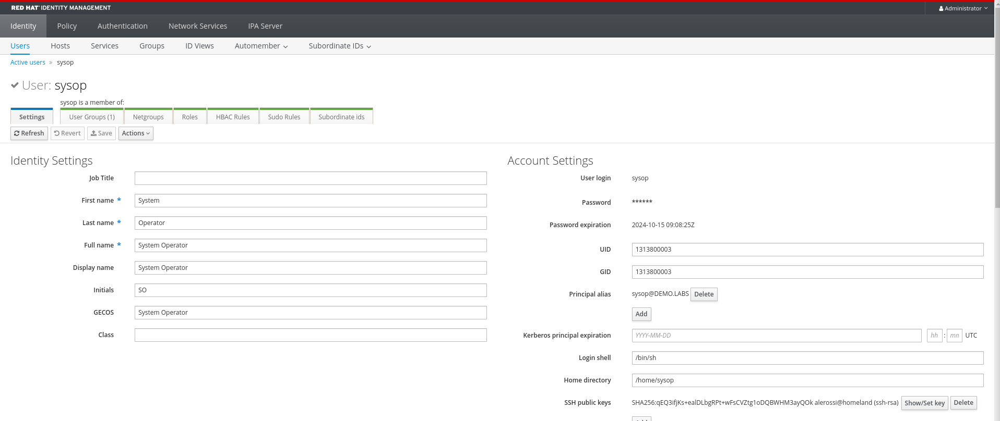

Users Management
In this section we will configure users in IdM and see how we can tailor access permissions to hosts
Users management overview
To create users, we will use the GUI provided by Red Hat Identity Management. The same operations and further customization can also be performed using the CLI as shown in the documentation.
Users in IdM have a dedicated lifecycle, and can have three different states, Active, Stage, Preserved
- Stage -> Users are not allowed to authenticate and some operation on them cannot be performed, like group management.
- Active -> Users in this state are fully functional and can be used for any operation.
- Preserved -> Users in this state are 'archived' meaning that they are not able to authenticate but preserve all settings they had when active, but are removed from groups.
Tip
More details about users lifecycle can be found in the documentation
For the scope of this use case, we will focus on active users.
Create a user
Access the Web Interface using the following information:
| URL | https://idm.demo.labs |
| User | admin |
| Password | admin123 |
In the Identity->Users tab, stay in the Active users view and click on Add.
Fill the form with the following values:
| User login | sysop |
| First name | System |
| Last name | Operator |
| New Password | redhat |
| Verify Password | redhat |
Leave other fields blank, your window will look like this:

Click on "Add", and when back in the main page, click in the sysop user to review the details.
Login with the new user
Upon creation, the chosen password must be changed upon first login, let's verify that the user is correctly created and change its password.
Verify that the password expired and set redhat123 as the password.
❯ ssh sysop@rhel9-idm-client-0.demo.labs
(sysop@rhel9-idm-client-0.demo.labs) Password:
(sysop@rhel9-idm-client-0.demo.labs) Password expired. Change your password now.
Current Password:
(sysop@rhel9-idm-client-0.demo.labs) New password:
(sysop@rhel9-idm-client-0.demo.labs) Retype new password:
Register this system with Red Hat Insights: insights-client --register
Create an account or view all your systems at https://red.ht/insights-dashboard
Great, we are in! Let's have a look at the user information using the id command
As you will see, the user GID and UID match the ones in the user details on IdM web UI:
[sysop@rhel9-idm-client-0 ~]$ id
uid=1313800003(sysop) gid=1313800003(sysop) groups=1313800003(sysop) context=unconfined_u:unconfined_r:unconfined_t:s0-s0:c0.c1023

Configuring an SSH key for the user sysop
Open a connection to the rhel9-idm-client-0.demo.labs host with user sysops and password redhat123
Let's create an SSH key pair for the user on your laptop in the current folder:
❯ ssh-keygen -t rsa -f idm_key
Generating public/private rsa key pair.
Enter passphrase (empty for no passphrase):
Enter same passphrase again:
Your identification has been saved in idm_key
Your public key has been saved in idm_key.pub
The key fingerprint is:
SHA256:qEQ3ifjKs+ealDLbgRPt+wFsCVZtg1oDQBWHM3ayQOk alerossi@homeland
The key's randomart image is:
+---[RSA 3072]----+
|=+++=. |
| o.@.* . |
|o.* @ = |
|.E = . o |
|. * o . S |
| * = . |
|= O o |
| B *.. |
|. *=o |
+----[SHA256]-----+
Change the permissions of the keys to 600:
Retrieve the content of the public key:
Now go back on the IdM Web UI, access the user details under Identity->Users->sysop and go in the *SSH public keys", click on "Add" and paste the content of the previous command.
In the users details section click on Save and verify that the user now has an SSH key associated with it.

Now let's try to SSH in the host using the private key we generated:
Et voilà, we are now logged in using the SSH key for the user sysop